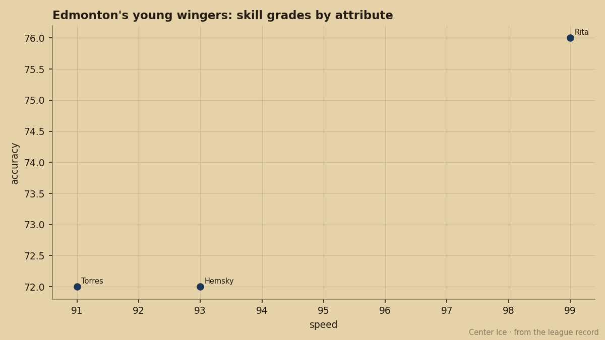

Future Files: Edmonton Has 99, 97 and 90 on One Roster and 8.4 Minutes to Give Them
Rita, Torres and Hemsky carry three of the league's highest potential figures among under-25s. Two of them dress fourth-line minutes and all three are on expiring deals.
 Pete LarocqueScouting editor · The Prospect File
Pete LarocqueScouting editor · The Prospect File
 Jani Rita76 has potential 99. Raffi Torres76 has potential 97.
Jani Rita76 has potential 99. Raffi Torres76 has potential 97.  Ales Hemsky76 has potential 90. Three players on the same
Ales Hemsky76 has potential 90. Three players on the same  Edmonton Oilers roster, all under 24, all rising on the Bureau's Development Index this season. Rita and Torres are averaging 8.4 and 8.7 minutes a night.
Edmonton Oilers roster, all under 24, all rising on the Bureau's Development Index this season. Rita and Torres are averaging 8.4 and 8.7 minutes a night.
The Book says these three carry more upside than almost anyone else in their age bracket. The ice time says the coaching staff does not believe it yet. And all three contracts expire in 1 year.
The potential column versus the minutes column
Rita is 23, drafted 13th overall in 1999, sitting at overall 74 with a form of +3. Thirty-four games, 10 points, 8.4 minutes. Torres is also 23, the 5th pick in 2000, overall 74 with a form of +5. Thirty-four games, 11 points, 8.7 minutes. Hemsky is 21, the 13th pick in 2001, overall 76 with a form of +4. Thirty-four games, 21 points, 14.0 minutes.
The Development Index has all three moving up. Rita is +3, Torres +5, Hemsky +4. The Bureau is telling you these men are getting better right now. The lineup card is telling you something else.

The attribute spread explains the minutes question better than any single number. Rita carries speed 99, shot power 91, puck control 80. His checking grade is 50. Torres has checking 84, speed 91, shot power 94, and puck control 62. Hemsky sits in between: speed 93, shot power 95, passing 80, puck control 81, checking 57.
Hemsky is the one getting the trust. He has the passing grade, the puck control, and a checking number above the other two. That is a player a coach can put on the second line and trust to make a play and get back. Rita's 50 checking and Torres's 62 puck control are what keep them on the fourth line at 8 minutes.
The expiring deals
Rita's salary is $1.00M on a deal with 1 year left. Torres is at $1.10M with 1 year left. Hemsky is at $1.10M with 1 year left. Next summer, three high-potential players with no leverage held by the club walk or re-sign on their own terms.
EDM sits at 43 points, 13-12-1, fifth in the Northwest.  Ryan Smyth85 is the defending Hart winner and carries 56 points in 34 games this season at 22.0 minutes a night. The team is not bad. The team is not good enough to win a series. The organization has to decide whether these three are the core they build around or the assets they move while the potential numbers are high.
Ryan Smyth85 is the defending Hart winner and carries 56 points in 34 games this season at 22.0 minutes a night. The team is not bad. The team is not good enough to win a series. The organization has to decide whether these three are the core they build around or the assets they move while the potential numbers are high.
The Bureau's grades make them hard to move cheaply. Rita's 99 potential, Torres's 97, Hemsky's 90. Any GM in the league sees those numbers in the Book and calls. The question for Edmonton Oilers is whether they can get the minutes up enough by March to make re-signing worth the cap hit, or whether June's draft gives them a better path and they trade from strength in February.
What the Index says about the next two months
Rita's +3 puts his overall at 74 from a base of 71. Torres's +5 puts him at 74 from 69. Hemsky's +4 puts him at 76 from 72. If the Index continues to climb, these three look better in March than they do in December. A trade deadline deal for a player whose form is trending down is a different conversation than one for a player trending up.
Torres is the most interesting case. He carries the highest form of the three at +5, his checking is already 84, and his potential is 97. If his puck control moves even four or five points, he becomes a top-six winger. The Index suggests it might. Eight minutes a night does not let it happen.
Smyth at 22.0 minutes, Hemsky at 14.0. If you assume two centers and four wingers, there are 12 minutes of top-six forward ice time unaccounted for on this roster. The question is whether the coaching staff trusts the potential numbers enough to hand them over.